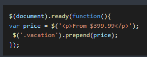
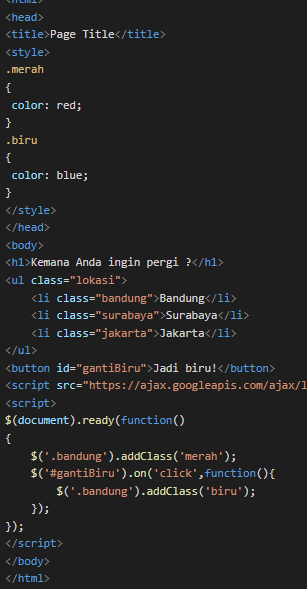

JQuery
adalah kumpulan fungsi-fungsi javascript yang berguna untuk memudahkan penulisan kode javascript.
jQuery mempunyai fitur seperti menyederhanakandokumen
traversing, event handling, animating, dan interaksi ajax
untuk pengembahngan web secara cepat.
manfaat jQuery:
- menemukan elemen dalam dokumen HTML,
- mengubah konten HTML,
- mendengarkan apa yang dilakukan pengguna dan melakukan tindakan yang sesuai (event listener),
- membuat animasi konten di halaman,
- berbicara emlalui jaringan untuk mengambil konten baru. (ajax)
Document Object Model (DOM)
merupakan sebuah struktur seperti pohon yang dibuat oleh browser sehingga kita dapat dengan cepat menemukan elemen HTML menggunakan Javascript.

cara memanggil jQuery
panggil file jquery terlebih dahulu dengan menggunakan syntax script, dapat berupa link dari halaman utama jquery atau mengunduh file jquery terlebih dahulu.
untuk mengetahui apakah jQuery sudah dimuat atau belum, dapat kita lihat melalui console di browser dengan mengetikan simbol $. bila jQuery telah termuat maka akan menampilkan pesan
ƒ (e,t){return new k.fn.init(e,t)}
Menggunakan jQuey Selector
digunakan untuk memilih elemen html berdasarkan
nama, id, class, value atau lainnnya.

Elemen Selector
contoh syntax => $('p');
id selector
elemen tunggal yang bersifat unik.
syntax: $("#sample");
class selector
syntax: $(.sample);
Bekerja dengan DOM jQuery
pada jQuery terdapat beberapa cara untuk memanipulasi DOM.
Menggunakan - pseudoclass
jQuery selector - pseudoclass
mencari elemen tertentu di dalam object dengan id yang telah ditentukan. Contohnya: $("#destination li");
mencari elemen child
kita bisa mencari elemen anak atau child dalam object yang memiliki id.
mencari elemen lebih dari satu
dapat menggunakan tanda koma.
$(".iniClass, #iniId");
memilih elemen pertama atau elemen terakhir
mencari elemen pertama: $("#iniId li:first");
mencari elemen terakhir: $("#iniId li:last");
memilih elemen ganjil genap
memilih elemen ganjil: $("#iniId li:odd")
memilih elemen genap: $("#iniId li:even")
Menggunakan fungsi Traversing
-
.first()
memilih elemen pertama dari elemen yang dipilih
-
.last()
memilih elemen terakhir dari elemen yang dipilih
-
.prev()
memilih elemen sebelumnya dari elemen yang dipilih
-
.next()
memilih elemen berikutnya dari elemen yang dipilih
-
.children()
memilih elemen anak dari elemen yang dipilih
-
.find()
memilih elemen anak dan juga elemen-elemen dibawahnya dari elemen yang dipilih
-
.parent()
memilih elemen parent dari elemen yang dipilih

gambaran DOM
Gambaran DOM ketika kita hanya memilih elemen pertama.

Gambaran DOM ketika kita memilih parent dari elemen, maka akan memilih tag ul.

Gambaran DOM ketika kita memilih anak-anak dari tag ul.

Manipulasi DOM
add
Fungsi add, berikut:
.before
digunakan untuk menyisipkan konten tertentu sebelum elemen yang dipilih. Contohnya:

.after (tag elemen)
digunakan untuk menyisipkan konten tertentu setelah elemen yang dipilih.
dom yang dihasilkan adalah:

.append (tag elemen)
digunakan untuk menyisipkan konten tertentu di dalam elemen yang dipilih dan di letakan dibagian akhir.
metode meletakan price di dalam daftar list vacation dan diletakan pada bagian akhir.

.prepend(tag elemen)
digunakan untuk menyisipkan konten tertentu di dalamelemen yang dipilih dan diletakan di awal.

metode prepend akan meletakkan price di dalam daftar list vacation dan diletakkan pada bagian awal.

Alternatif
fungsinya sama seperti add, hanya saja susunan pemekaiannya berbeda.
.insertBefore
fungsinya sama seperti before, digunakkan untuk menyisipkan konten atau elemen html setelah elemen yang dipilih.
price.insertBefore($('.vacation'));
.insertAfter
fungsinya sama seperti after, digunakkan untuk menyisipkan konten atau elemen html sebelum elemen yang dipilih.
price.insertAfter($('.vacation'));
.prependTo
fungsinya sama seperti prepend, digunakkan untuk menyisipkan konten atau elemen html di awal elemen yang dipilih.
price.prependTo($('.vacation'));
.appendTo
fungsinya sama seperti append, digunakkan untuk menyisipkan konten atau elemen html di akhir elemen yang dipilih.
price.appendTo($('.vacation'));
kode diatas sama dengan kode dibawah ini.
outputnya:

GET
digunakan untuk mengambil data elemen di jQuery.
-
.text
mengembalikan konten teks dari elemenyang dipilih. metode ini mengembalikan semua elemmen yang cocok dan menghapus markup HTML.
untuk mengetahui teks dari elemen dengan class="surabaya" kita bisa membuka console pada web browser, outpunya:

-
.html
mengembalikan konten elemen yang dipilih (termasuk markup html).

-
.val
mengembalikan value pada form.

kode diatas mengembalikan value dari class="inputan"

SET
-
.text(konten)
mengatur konten teks dari elemen yang dipilih.
-
.html(konten)
mengatur konten elemen yang dipilih (markup html).
-
.val(konten)
menetapkan / mengembalikan value pada form.
apabila kita jalankan di browser maka hasilnya:

nah, tambahkan metode SET text, html, dan val.
perhatikan penggunaanmetode SET jQuery dari kode diatas.
dari kde tersebut hasil class bandung akan diatur menjadi cimahi, class surabay akan diatur menjadi surabaya dengan menyertakan markup html, serta inputan akan diatur menjadi semarang.

REMOVE
digunakan untuk mengambil data di jQuery.
-
.remove()
menghapus elemen dan elemen didalamnya (child).
-
.empty()
menghapus elemen didalamnya saja.
-
Contohnya:
hasil dari kode diatas, elemen dengan class bandung akan dihapus dari list, sedangkan elemen dengan class surabaya akan dikosongkan, namunlistnya masih ada.

Event Handler
Semua tindakan pengguna yang berbeda dimana dapat ditanggapi oleh javascript / jQuery disebut event.
contohnya:
- menggerakkan mouse di atas elemen
- memilih tombol radio
- mengklik elemen
Macam Event Handler
berikut macam event handler:
-
Mouse Events
- click
- dblclick
- mouseenter
- mouseleave
-
Keyboard Events
- keypress
- keydown
- keyup
-
Form Events
- submit
- change
- focus
- blur
-
Document / Window Events
- load
- resize
- scroll
- unload
Fitur Effect jQuery
Jenis-jenis fitur effect:
-
Tanpa Animasi
-
hide (kecepatan)
digunakan untuk menyembunyikan elemen yang dipilih.
-
show (kecepatan)
digunakan untuk memunculkan elemen yang dipilih.
-
toogle (kecepatan)
beralih antara hide dan show, yaitu ketika elemen dalam keadaan muncul / show. maka akan disembunyikan, sedangkan ketikadalam keadaan sembunyi maka akan dimunculkan.
-
Animasi Fade
-
fadeIn (kecepatan)
digunakan untuk memunculkan elemen yang dipilih dengan efek transisi yaitu muncul secara perlahan.
-
fadeOut (kecepatan)
digunakan untuk menyembunyikan elemen yang dipilih dengan efek transisi yaitu disembunyikan secara perlahan.
-
fadeToggle (kecepatan)
beralih antara metode fadeIn() dan fadeOut().
-
fadeTo (kecepatan)
memberikan efek opacity / transparansi suatu elemen.
-
Animasi Slide
-
slideDown (kecepatan)
memunculkan elemen yang dipilih dengan efek slide ke bawah.
-
slideUp (kecepatan)
menyembunyikan elemen yang dipilih dengan efek slide ke atas.
-
slideToggle (kecepatan)
gabungan antara pada elemen yang dipilih.
-
Animasi via CSS
-
animate (kecepatan)
menjalankan animasi pada elemen yang dipilih.
Contoh Penggunaanya:

-
Contoh hide

Ketika tombol H diklik maka Bandung akan disembunyikan dari daftar, namun di DOM masih ada.

-
Contoh fadeOut
untuk mengatur kecepatan dari efek transisi, kita bisa menambahkan jumlah kecepatan (dengan satuan mili second) seperti:
-
Contoh slideUp
untuk menyembunyikan Bandung dari daftar dengan efek slide ke atas, bisa menggunakan slideUp:
-
Contoh toggle
untuk menyembunyikan dan memunculkan suatu elemen juga dapat menggunakan toggle. Misalnya ingin membuat tombol untuk menyembunyikan dan memunculkan kembali elemen dari daftar.

untuk memberikan respon terhadap tombol toggle, tambahkan script jQuery.
sehingga kode lengkapnya:
-
Contoh fadeToggle
untuk memberikan efek transisi dapat di ubah ke fadeToggle.
-
Contoh slideToggle
untuk memberikan efek slide ke atas (untuk menyemmbunyikan) dan kebawah (untuk menampilkan) kita juga bisa mengubahnya menjadi slideToggle.
-
Contoh animate
untuk memberikan efek animasi dengan mengubahnya menjadi animate.
Manipulasi CSS di jQuery
beberapa FItur Effect yang disediakan:
-
addClass (namaclass)
digunakan untuk menambahkan satu atau lebih class ke elemen yang dipilih.
-
removeClass (namaclass)
digunakan untuk menghapus satu atau lebih class dari elemen yang dipilih.
-
toggleClass (namaclass)
beralih antara menambahkan atau menghapus class dari elemen yang dipilih.
-
css (css dalam bentuk object)
menetapkan atau mengembalikan atribut style.
contoh penggunaanya
outpunya:

kita juga dapat menambahkan sebuah tombol untuk mengubah warna class bandung menjadi biru.

outpunya:

contoh memperbesar font atau teks:
Penggunaan Library jQuery
biasanya pilihan library yang biasa digunakan:
autocomplete, button, accordion, dll.
Berikut contoh library jQuery.
-
Autocomplete
untuk mencoba autocomplete, bisa mengikuti https://jqueryui.com/ . contoh penggunaannya dapat membuka "Autocomplete" pada menu Widgets.

Pada autocomplete, ketika kita mengetikkan suatu kata kunci. Maka kata kunci yang cocok dengan data yang disediakan akan muncul secara otomatis.
Biasanya source code yang disediakan untuk mmenjalankan autocomplete terdiri dari 3 elemen, yaitu file css dan js yang harus dimuat, juga kode html dan jQuery untuk memuat data.
file css dan js yang harus dimuat.
kode jQuery
kode html.
ketika kita coba pada server dan ketik kata kunci, maka akan muncul data yang sesuai dengan kata kunci tersebut.

-
jQuery Slick
Dapat memasang slider, dapat melakukan browsing dengan kata kunci jQuery slick pada aplikasi pencarian. https://kenwheeler.github.io/slick/
berikut langkah-langkah menggunakan jQuery slick sesuai usage:
siapkan markup html
langkahn pertama adalah menyiapkan markup html, lalu simpan dengan nama slick.html
pindahkan folder slick ke folder aplikasi
untuk memindahkan folder slick tersebut, kita harus mengunduhnya terlebih dahulu. Klik menu get it now untuk mengunduhnya.

ketika halaman download terbuka, kemudian klik tombol download now

setelah berhasil diunduh, ekstrak file kemudian copy ke projek. Filenya berisi css dan js.
tambahkan slick.css di bagian head
**tambahkan slick.js sebelum tag penutup body**
inisialisasi slider di script
inisialisasi slider setelah memuat js.
outputnya:

kita bisa menggeser konten ke kiri dan ke kanan.
-
Popup
selain slider, kita juga bisa menggunakan popup. contohnya: https://dev.vast.com/jquery-popup-overlay/
download plugin popup

setelah download, ekstrak folder kemdian copy kedalam project untuk mempermudah pengembangan.
untuk menjalankan popup, dapat mengikuti dokumentasi / usage yang ada di web.
outputnya: